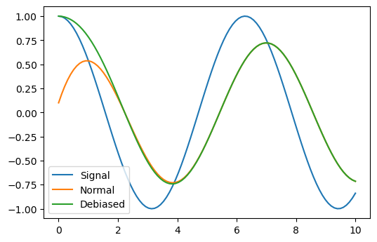

Base module¶
-
k1lib.settings¶
This is actually an object of type Settings:
Settings:
- displayCutoff = 50 cutoff length when displaying a Settings object
- svgScale = 0.7 default svg scales for clis that displays graphviz graphs
- wd = /home/kelvin/repos/labs/k1lib/docs default working directory, will get from `os.getcwd()`. Will update using `os.chdir()` automatically when changed
- cancelRun_newLine = True whether to add a new line character at the end of the cancel run/epoch/batch message
- startup = <Settings> these settings have to be applied like this: `import k1lib; k1lib.settings.startup.or_patch = False; from k1lib.imports import *` to ensure that the values are set
- or_patch = True whether to remove __or__() method from numpy array and pandas data frame and series. This would make cli operations with them a lot more pleasant, but also means you have to convert numpy floats to normal floats before doing a bitwise or to it
- cli = <Settings> from k1lib.cli module
- jit = True whether to enable automatic JIT compilation of cli tools. See `fastF` for more details
- defaultDelim = default delimiter used in-between columns when creating tables. Defaulted to tab character.
- defaultIndent = default indent used for displaying nested structures
- strict = False turning it on can help you debug stuff, but could also be a pain to work with
- inf = inf infinity definition for many clis. Here because you might want to temporarily not loop things infinitely
- quiet = False whether to mute extra outputs from clis or not
- arrayTypes = (<class 'torch.Tensor'>, <class 'numpy.ndarray'>) default array types used to accelerate clis
- smooth = 10 default smooth amount, used in utils.smooth
- atomic = <Settings> classes/types that are considered atomic and specified cli tools should never try to iterate over them
- baseAnd = (<class 'numbers.Number'>, <class 'numpy.number... used by BaseCli.__and__
- deref = (<class 'numbers.Number'>, <class 'numpy.number... used by deref
- bio = <Settings> from k1lib.cli.bio module
- blast = None location of BLAST database
- go = None location of gene ontology file (.obo)
- so = None location of sequence ontology file
- lookupImgs = True sort of niche. Whether to auto looks up extra gene ontology relationship images
- phred = !"#$%&'()*+,-./0123456789:;<=>?@ABCDEFGHIJ Phred quality score
- sam = <Settings> from k1lib.cli.sam module
- flags = ['PAIRED', 'PROPER_PAIR', 'UNMAP', 'MUNMAP', 'R... list of flags
- header = <Settings> sam headers
- short = ['qname', 'flag', 'rname', 'pos', 'mapq', 'ciga...
- long = ['Query template name', 'Flags', 'Reference seq...
- eqn = <Settings> from k1lib.eqn module
- spaceBetweenValueSymbol = True
- eqnPrintExtras = True
- mo = <Settings> from k1lib.mo module
- overOctet = False whether to allow making bonds that exceeds the octet rule
Also, this is exposed automatically, so something like this works:
settings.svgScale = 0.6
Classes¶
-
class
k1lib.Learner[source]¶ Bases:
object-
property
model¶ Set this to change the model to run
-
property
data¶ Set this to change the data (list of 2 dataloader) to run against.
-
property
opt¶ Set this to change the optimizer. If you’re making your own optimizers, beware to follow the PyTorch’s style guide as there are callbacks that modifies optimizer internals while training like
k1lib.schedule.ParamScheduler.
-
property
cbs¶ The
Callbacksobject. Initialized to include all the common callbacks. You can set a new one if you want to.
-
property
css¶ The css selector string. Set this to select other parts of the network. After setting, you can access the selector like this:
l.selectorSee also:
ModuleSelector
-
property
lossF¶ Set this to specify a loss function.
-
evaluate()[source]¶ Function to visualize quickly how the network is doing. Undefined by default, just placed here as a convention, so you have to do something like this:
l = k1lib.Learner() def evaluate(self): xbs, ybs, ys = self.Recorder.record(1, 3) plt.plot(torch.vstack(xbs), torch.vstack(ys)) l.evaluate = partial(evaluate(l))
-
__call__(xb, yb=None)¶ Executes just a small batch. Convenience method to query how the network is doing.
- Parameters
xb – x batch
yb – y batch. If specified, return (y, loss), else return y alone
-
static
load(fileName: Optional[str] = None)¶ Loads a
Learnerfrom a file. See also:save()- Parameters
fileName – if empty, then will prompt for file name
-
run(epochs: int, batches: Optional[int] = None)¶ Main run function.
- Parameters
epochs – number of epochs to run. 1 epoch is the length of the dataset
batches – if set, then cancels the epoch after reaching the specified batch
-
static
sample() → k1lib._learner.Learner¶ Creates an example learner, just for simple testing stuff anywhere. The network tries to learn the function y=x. Only bare minimum callbacks are included.
-
save(fileName: Optional[str] = None)¶ Saves this
Learnerto file. See also:load(). Does not save thedataobject, because that’s potentially very big.- Parameters
fileName – if empty, then will save as “learner-0.pth”, with 0 changeable to avoid conflicts. If resave this exact
Learner, then use the old name generated before
-
property
-
class
k1lib.Object[source]¶ Bases:
objectConvenience class that acts like
defaultdict. You can use it like a normal object:a = k1lib.Object() a.b = 3 print(a.b) # outputs "3"
__repr__()output is pretty nice too:<class '__main__.Object'>, with attrs: - b
You can instantiate it from a dict:
a = k1lib.Object.fromDict({"b": 3, "c": 4}) print(a.c) # outputs "4"
And you can specify a default value, just like defaultdict:
a = k1lib.Object().withAutoDeclare(lambda: []) a.texts.extend(["factorio", "world of warcraft"]) print(a.texts[0]) # outputs "factorio"
Warning
Default values only work with variables that don’t start with an underscore “_”.
Treating it like defaultdict is okay too:
a = k1lib.Object().withAutoDeclare(lambda: []) a["movies"].append("dune") print(a.movies[0]) # outputs "dune"
-
property
state¶ Essentially
__dict__, but only outputs the fields you defined. If your framework intentionally set some attributes, those will be reported too, so beware
-
property
-
class
k1lib.Range(start=0, stop=None)[source]¶ Bases:
objectA range of numbers. It’s just 2 numbers really: start and stop
This is essentially a convenience class to provide a nice, clean abstraction and to eliminate errors. You can transform values:
Range(10, 20).toUnit(13) # returns 0.3 Range(10, 20).fromUnit(0.3) # returns 13 Range(10, 20).toRange(Range(20, 10), 13) # returns 17
You can also do random math operations on it:
(Range(10, 20) * 2 + 3) == Range(23, 43) # returns True Range(10, 20) == ~Range(20, 10) # returns True
-
__getitem__(index)[source]¶ 0 for start, 1 for stop
You can also pass in a
sliceobject, in which case, a range subset will be returned. Code kinda looks like this:range(start, stop)[index]
-
__init__(start=0, stop=None)[source]¶ Creates a new Range.
There are different
__init__functions for many situations:Range(2, 11.1): create range [2, 11.1]
Range(15.2): creates range [0, 15.2]
Range(Range(2, 3)): create range [2, 3]. This serves as sort of a catch-all
Range(slice(2, 5, 2)): creates range [2, 5]. Can also be a
rangeRange(slice(2, -1), 10): creates range [2, 9]
Range([1, 2, 7, 5]): creates range [1, 5]. Can also be a tuple
-
fixOrder() → k1lib._baseClasses.Range[source]¶ If start greater than stop, switch the 2, else do nothing
-
toUnit(x)[source]¶ Converts x from current range to [0, 1] range. Example:
r = Range(2, 10) r.toUnit(5) # will return 0.375, as that is (5-2)/(10-2)
You can actually pass in a lot in place of x:
r = Range(0, 10) r.toUnit([5, 3, 6]) # will be [0.5, 0.3, 0.6]. Can also be a tuple r.toUnit(slice(5, 6)) # will be slice(0.5, 0.6). Can also be a range, or Range
Note
In the last case, if
startis None, it gets defaulted to 0, and ifendis None, it gets defaulted to 1
-
fromUnit(x)[source]¶ Converts x from [0, 1] range to this range. Example:
r = Range(0, 10) r.fromUnit(0.3) # will return 3
x can be a lot of things, see
toUnit()for more
-
toRange(_range: k1lib._baseClasses.Range, x)[source]¶ Converts x from current range to another range. Example:
r = Range(0, 10) r.toRange(Range(0, 100), 6) # will return 60
x can be a lot of things, see
toUnit()for more.
-
static
proportionalSlice(r1, r2, r1Slice: slice) → Tuple[k1lib._baseClasses.Range, k1lib._baseClasses.Range][source]¶ Slices r1 and r2 proportionally. Best to explain using an example. Let’s say you have 2 arrays created from a time-dependent procedure like this:
a = []; b = [] for t in range(100): if t % 3 == 0: a.append(t) if t % 5 == 0: b.append(1 - t) len(a), len(b) # returns (34, 20)
a and b are of different lengths, but you want to plot both from 30% mark to 50% mark (for a, it’s elements 10 -> 17, for b it’s 6 -> 10), as they are time-dependent. As you can probably tell, to get the indicies 10, 17, 6, 10 is messy. So, you can do something like this instead:
r1, r2 = Range.proportionalSlice(Range(len(a)), Range(len(b)), slice(10, 17))
This will return the Ranges [10, 17] and [5.88, 10]
Then, you can plot both of them side by side like this:
fig, axes = plt.subplots(ncols=2) axes[0].plot(r1.range_, a[r1.slice_]) axes[1].plot(r2.range_, a[r2.slice_])
-
-
class
k1lib.Domain(*ranges, dontCheck: bool = False)[source]¶ Bases:
object-
__init__(*ranges, dontCheck: bool = False)[source]¶ Creates a new domain.
- Parameters
ranges – each element is a
Range, although any format will be fine as this selects for thatdontCheck – don’t sanitize inputs, intended to boost perf internally only
A domain is just an array of
Rangethat represents what intervals on the real number line is chosen. Some examples:inf = float("inf") # shorthand for infinity Domain([5, 7.5], [2, 3]) # represents "[2, 3) U [5, 7.5)" Domain([2, 3.2], [3, 8]) # represents "[2, 8)" as overlaps are merged -Domain([2, 3]) # represents "(-inf, 2) U [3, inf)", so essentially R - d, with R being the set of real numbers -Domain([-inf, 3]) # represents "[3, inf)" Domain.fromInts(2, 3, 6) # represents "[2, 4) U [6, 7)"
You can also do arithmetic on them, and check “in” oeprator:
Domain([2, 3]) + Domain([4, 5]) # represents "[2, 3) U [4, 5)" Domain([2, 3]) + Domain([2.9, 5]) # represents "[2, 5)", also merges overlaps 3 in Domain([2, 3]) # returns False 2 in Domain([2, 3]) # returns True
-
-
class
k1lib.AutoIncrement(initialValue: int = - 1, n: int = inf, prefix: Optional[str] = None)[source]¶ Bases:
object-
__init__(initialValue: int = - 1, n: int = inf, prefix: Optional[str] = None)[source]¶ Creates a new AutoIncrement object. Every time the object is called it gets incremented by 1 automatically. Example:
a = k1lib.AutoIncrement() a() # returns 0 a() # returns 1 a() # returns 2 a.value # returns 2 a.value # returns 2 a() # returns 3 a = AutoIncrement(n=3, prefix="cluster_") a() # returns "cluster_0" a() # returns "cluster_1" a() # returns "cluster_2" a() # returns "cluster_0"
- Parameters
n – if specified, then will wrap around to 0 when hit this number
prefix – if specified, will yield strings with specified prefix
-
static
random() → k1lib._baseClasses.AutoIncrement[source]¶ Creates a new AutoIncrement object that has a random integer initial value
-
property
value¶ Get the value as-is, without auto incrementing it
-
-
class
k1lib.Wrapper(value)[source]¶ Bases:
object-
__init__(value)[source]¶ Creates a wrapper for some value and get it by calling it. Example:
a = k1lib.Wrapper(list(range(int(1e7)))) # returns [0, 1, 2, 3, 4, 5, 6, 7, 8, 9] a()[:10]
This exists just so that Jupyter Lab’s contextual help won’t automatically display the (possibly humongous) value. Could be useful if you want to pass a value by reference everywhere like this:
o = k1lib.Wrapper(None) def f(obj): obj.value = 3 f(o) o() # returns 3
-
-
class
k1lib.Every(n)[source]¶ Bases:
object-
__init__(n)[source]¶ Returns True every interval. Example:
e = k1lib.Every(4) e() # returns True e() # returns False e() # returns False e() # returns False e() # returns True
-
property
value¶
-
-
class
k1lib.RunOnce[source]¶ Bases:
object-
__init__()[source]¶ Returns False first time only. Example:
r = k1lib.RunOnce() r.done() # returns False r.done() # returns True r.done() # returns True r.revert() r.done() # returns False r.done() # returns True r.done() # returns True
May be useful in situations like:
class A: def __init__(self): self.ro = k1lib.RunOnce() def f(self, x): if self.ro.done(): return 3 + x return 5 + x a = A() a.f(4) # returns 9 a.f(4) # returns 7
-
-
class
k1lib.MaxDepth(maxDepth: int, depth: int = 0)[source]¶ Bases:
object
-
class
k1lib.MovingAvg(initV: float = 0, alpha=0.9, debias=False)[source]¶ Bases:
object-
__init__(initV: float = 0, alpha=0.9, debias=False)[source]¶ Smoothes out sequential data using momentum. Example:
a = k1lib.MovingAvg(5) a(3).value # returns 4.8, because 0.9*5 + 0.1*3 = 4.8 a(3).value # returns 4.62
Difference between normal and debias modes:
x = torch.linspace(0, 10, 100); y = torch.cos(x) | op().item().all() | deref() plt.plot(x, y); a = k1lib.MovingAvg(debias=False); plt.plot(x, y | apply(lambda y: a(y).value) | deref()) a = k1lib.MovingAvg(debias=True); plt.plot(x, y | apply(lambda y: a(y).value) | deref()) plt.legend(["Signal", "Normal", "Debiased"])
As you can see, normal mode still has the influence of the initial value at 0 and can’t rise up fast, whereas the debias mode will ignore the initial value and immediately snaps to the first saved value.
- Parameters
initV – initial value
alpha – number in [0, 1]. Basically how much to keep old value?
debias – whether to debias the initial value
-
-
class
k1lib.Absorber(initDict: dict = {})[source]¶ Bases:
objectCreates an object that absorbes every operation done on it. Could be useful in some scenarios:
ab = k1lib.Absorber() # absorbs all operations done on the object abs(ab[::3].sum(dim=1)) t = torch.randn(5, 3, 3) # returns transformed tensor of size [2, 3] ab.ab_operate(t)
Another:
ab = Absorber() ab[2] = -50 # returns [0, 1, -50, 3, 4] ab.ab_operate(list(range(5)))
Because this object absorbs every operation done on it, you have to be gentle with it, as any unplanned disturbances might throw your code off. Best to create a new one on the fly, and pass them immediately to functions, because if you’re in a notebook environment like Jupyter, it might poke at variables.
For extended code example that utilizes this, check over
k1lib.cli.modifier.opsource code.-
__init__(initDict: dict = {})[source]¶ Creates a new Absorber.
- Parameters
initDict – initial variables to set, as setattr operation is normally absorbed
-
ab_operate(x)[source]¶ Special method to actually operate on an object and get the result. Not absorbed. Example:
# returns 6 (op() * 2).ab_operate(3)
-
ab_fastF()[source]¶ Returns a function that operates on the input (just like
ab_operate()), but much faster, suitable for high performance tasks. Example:f = (k1lib.Absorber() * 2).ab_fastF() # returns 6 f(3)
-
-
class
k1lib.Settings(**kwargs)[source]¶ Bases:
object-
__init__(**kwargs)[source]¶ Creates a new settings object. Basically fancy version of
dict. Example:s = k1lib.Settings(a=3, b="42") s.c = k1lib.Settings(d=8) s.a # returns 3 s.b # returns "42" s.c.d # returns 8 print(s) # prints nested settings nicely
-
context(**kwargs)[source]¶ Context manager to temporarily modify some settings. Applies to all sub-settings. Example:
s = k1lib.Settings(a=3, b="42", c=k1lib.Settings(d=8)) with s.context(a=4): s.c.d = 20 s.a # returns 4 s.c.d # returns 20 s.a # returns 3 s.c.d # returns 8
-
add(k: str, v: Any, docs: str = '', cb: Optional[Callable[[k1lib._baseClasses.Settings, Any], None]] = None) → k1lib._baseClasses.Settings[source]¶ Long way to add a variable. Advantage of this is that you can slip in extra documentation for the variable. Example:
s = k1lib.Settings() s.add("a", 3, "some docs") print(s) # displays the extra docs
- Parameters
cb – callback that takes in (settings, new value) if any property changes
-
-
class
k1lib.UValue(mean=0, std=1)[source]¶ Bases:
object-
__init__(mean=0, std=1)[source]¶ Creates a new “uncertain value”, which has a mean and a standard deviation. You can then do math operations on them as normal, and the propagation errors will be automatically calculated for you. Make sure to run the calculation multiple times as the mean and std values fluctuates by a little run-by-run. Example:
# returns UValue(mean=4.7117, std=3.4736) object abs(k1lib.UValue() * 5 + 3)
You can also instantiate from an existing list/numpy array/pytorch tensor:
# returns UValue(mean=24.5, std=14.58) object k1lib.UValue.fromSeries(range(50))
You can also do arbitrary complex math operations:
# returns UValue(mean=0.5544, std=0.4871) (20 + k1lib.UValue()).f(np.sin) # same as above, but takes longer to run! (20 + k1lib.UValue()).f(math.sin)
I suggest you to make your arbitrary function out of numpy’s operations, as those are a fair bit faster than regular Python.
If you have a list of
UValue, and want to plot them with error bars, then you can do something like this:x = np.linspace(0, 6) y = list(np.sin(x)*10) | apply(k1lib.UValue) | toList() plt.errorbar(x, *(y | transpose()));
There are several caveats however:
Note
First is the problem of theoretically vs actually sample a distribution. Let’s see an example:
# returns theoretical value UValue(mean=8000.0, std=1200.0) -> 8000.0 ± 1200.0 k1lib.UValue(20) ** 3 # prints out actual mean and std value of (8064.1030, 1204.3529) a = k1lib.UValue(20).sample() ** 3 print(a.mean(), a.std())
So far so good. However, let’s create some uncertainty in “3”:
# returns theoretical value UValue(mean=8000.0, std=23996.0) -> 10000.0 ± 20000.0 k1lib.UValue(20) ** k1lib.UValue(3) # prints out actual mean and std value of (815302.8750, 27068828.), but is very unstable and changes a lot a = k1lib.UValue(20).sample() ** k1lib.UValue(3).sample() print(a.mean(), a.std())
Woah, what happens here? The actual mean and std values are completely different from the theoretical values. This is mainly due to UValue(3) has some outlier values large enough to boost the result up multiple times. Even removing 1% of values on either end of the spectrum does not quite work. So, becareful to interpret these uncertainty values, and in some case the theoretical estimates from math are actually very unstable and will not be observed in real life.
Note
Then there’s the problem of each complex operation, say
(v*2+3)/5will be done step by step, meaninga=v*2mean and std will be calculated first, then ignoring the calculated sample values and just go with the mean and std, sample a bunch of values from there and calculatea+3mean and std. Rinse and repeat. This means that these 2 statements may differ by a lot:# prints out (0.15867302766786406, 0.12413313456900205) x = np.linspace(-3, 3, 1000); sq = (abs(x)-0.5)**2; y = sq*np.exp(-sq) print(y.mean(), y.std()) # returns UValue(mean=0.081577, std=0.32757) -> 0.1 ± 0.3 x = k1lib.UValue(0, 1); sq = (abs(x)-0.5)**2; y = sq*(-sq).f(np.exp)
Why this weird function? It converts from a single nice hump into multiple complex humps. Anyway, this serves to demonstrate that the result from the
calculate -> get mean, std -> sample from new distribution -> calculateprocess might be different from just calculating from start to end and then get the mean and std.Note
Lastly, you might have problems when using the same UValue multiple times in an expression:
a = UValue(10, 1) a * 2 # has mean 20, std 2 a + a # has mean 20, std 1.4
-
sample(n=100, _class=0)[source]¶ Gets a sample
torch.Tensorrepresentative of this uncertain value. Example:# returns tensor([-5.1095, 3.3117, -2.5759, ..., -2.5810, -1.8131, 1.8339]) (k1lib.UValue() * 5).sample()
-
static
fromSeries(series, unbiased=True)[source]¶ Creates a
UValuefrom a bunch of numbers- Parameters
series – can be a list of numbers, numpy array or PyTorch tensor
unbiased – if True, Bessel’s correction will be used
-
static
fromBounds(min_, max_)[source]¶ Creates a
UValuefrom min and max values. Example:# returns UValue(mean=2.5, std=0.5) k1lib.UValue.fromBounds(2, 3)
-
property
exact¶ Whether this UValue is exact or not
-
f(func)[source]¶ Covered in
__init__()docs
-
static
combine(*values, samples=1000)[source]¶ Combines multiple UValues into 1. Example:
a = k1lib.UValue(5, 1) b = k1lib.UValue(7, 1) # both returns 6.0 ± 1.4 k1lib.UValue.combine(a, b) [a, b] | k1lib.UValue.combine()
This will sample each UValue by default 1000 times, put them into a single series and get a UValue from that. Why not just take the average instead? Because the standard deviation will be less, and will not actually reflect the action of combining UValues together:
# returns 6.0 ± 0.7, which is narrower than expected (a + b) / 2
-
-
class
k1lib.wrapMod(m, moduleName=None)[source]¶ Bases:
object-
__init__(m, moduleName=None)[source]¶ Wraps around a module, and only suggest symbols in __all__ list defined inside the module. Example:
from . import randomModule randomModule = wrapMod(randomModule)
- Parameters
m – the imported module
moduleName – optional new module name for elements (their __module__ attr)
-
Context managers¶
-
class
k1lib.captureStdout[source]¶ Captures every print() statement. Taken from https://stackoverflow.com/questions/16571150/how-to-capture-stdout-output-from-a-python-function-call. Example:
with k1lib.captureStdout() as outer: print("something") with k1lib.captureStdout() as inner: print("inside inner") print("else") # prints "['something', 'else']" print(outer.value) # prints "['inside inner']" print(inner.value)
Note that internally, this replaces
sys.stdoutasio.StringIO, so might not work property if you have fancybytesstuff going on. Also, carriage return (\r) will erase the line, so multi-line overlaps might not show up correctly.If you wish to still print stuff out, you can do something like this:
with k1lib.captureStdout() as out: print("abc") # gets captured out.print("def") # not captured, will actually print out
-
class
k1lib.ignoreWarnings[source]¶ Context manager to ignore every warning. Example:
import warnings with k1lib.ignoreWarnings(): warnings.warn("some random stuff") # will not show anything
Exceptions¶
These exceptions are used within Learner to cancel things early on.
If you raise CancelBatchException while passing through the model,
the Learner will catch it, run cleanup code (including checkpoint
endBatch ), then proceeds as usual.
If you raise something more major, like CancelRunException,
Learner will first catch it at batch level, run clean up code, then
rethrow it. Learner will then recatch it at the epoch level, run
clean up code, then rethrow again. Same deal at the run level.
Functions¶
-
k1lib.textToHtml(text: str) → str[source]¶ Transform a string so that it looks the same on browsers as in print()
-
k1lib.patch(_class: type, name: Optional[str] = None, docs: Optional[Union[str, Any]] = None, static=False)[source]¶ Patches a function to a class/object.
- Parameters
_class – object to patch function. Can also be a type
name – name of patched function, if different from current
docs – docs of patched function. Can be object with defined __doc__ attr
static – whether to wrap this inside
staticmethodor not
- Returns
modified function just before patching
Intended to be used like this:
class A: def methA(self): return "inside methA" @k1lib.patch(A) def methB(self): return "inside methB" a = A() a.methB() # returns "inside methB"
You can do
@propertyattributes like this:class A: pass @k1lib.patch(A, "propC") @property def propC(self): return self._propC @k1lib.patch(A, "propC") @propC.setter def propC(self, value): self._propC = value a = A(); a.propC = "abc" a.propC # returns "abc"
The attribute name unfortunately has to be explicitly declared, as I can’t really find a way to extract the original name. You can also do static methods like this:
class A: pass @k1lib.patch(A, static=True) def staticD(arg1): return arg1 A.staticD("def") # returns "def"
-
k1lib.squeeze(_list: Union[list, tuple, torch.Tensor, Any], hard=False)[source]¶ If list only has 1 element, returns that element, else returns original list.
- Parameters
hard – If True, then if list/tuple, filters out None, and takes the first element out even if that list/tuple has more than 1 element
-
k1lib.limitLines(s: str, limit: int = 10) → str[source]¶ If input string is too long, truncates it and adds ellipsis
-
k1lib.limitChars(s: str, limit: int = 50)[source]¶ If input string is too long, truncates to first limit characters of the first line
-
k1lib.showLog(loggerName: str = '', level: int = 10)[source]¶ Prints out logs of a particular logger at a particular level
-
k1lib.beep(seconds=0.3)[source]¶ Plays a beeping sound, may be useful as notification for long-running tasks
-
k1lib.dontWrap()[source]¶ Don’t wrap horizontally when in a notebook. Normally, if you’re displaying something long, like the output of
print('a'*1000)in a notebook, it will display it in multiple lines. This may be undesirable, so this solves that by displaying some HTML with css styles so that the notebook doesn’t wrap.
-
k1lib.debounce(wait, threading=False)[source]¶ Decorator that will postpone a function’s execution until after
waitseconds have elapsed since the last time it was invoked. Taken from ipywidgets. Example:import k1lib, time; value = 0 @k1lib.debounce(0.5, True) def f(x): global value; value = x**2 f(2); time.sleep(0.3); f(3) print(value) # prints "0" time.sleep(0.7) print(value) # prints "9"
- Parameters
wait – wait time in seconds
threading – if True, use multiple threads, else just use async stuff
-
k1lib.scaleSvg(svg: str, scale: Optional[float] = None) → str[source]¶ Scales an svg xml string by some amount.
-
k1lib.now()[source]¶ Convenience function for returning a simple time string, with timezone and whatnot.
-
k1lib.sameStorage(a, b)[source]¶ Check whether 2 (
np.ndarrayortorch.Tensor) has the same storage or not. Example:a = np.linspace(2, 3, 50) # returns True k1lib.sameStorage(a, a[:5]) # returns True k1lib.sameStorage(a[:10], a[:5]) returns false k1lib.sameStorage(a[:10], np.linspace(3, 4))
All examples above should work with PyTorch tensors as well.
-
k1lib.perlin3d(shape=(100, 100, 100), res=(2, 2, 2), tileable=(False, False, False), interpolant=<function interpolant>)[source]¶ Generate a 3D numpy array of perlin noise. Not my code! All credits go to the author of this library: https://github.com/pvigier/perlin-numpy
- Parameters
shape – The shape of the generated array (tuple of three ints). This must be a multiple of res.
res – The number of periods of noise to generate along each axis (tuple of three ints). Note shape must be a multiple of res.
tileable – If the noise should be tileable along each axis (tuple of three bools). Defaults to (False, False, False).
interpolant – The interpolation function, defaults to t*t*t*(t*(t*6 - 15) + 10).
- Returns
A numpy array of shape shape with the generated noise.
- Raises
ValueError – If shape is not a multiple of res.
Higher order functions¶
-
k1lib.polyfit(x: List[float], y: List[float], deg: int = 6) → Callable[[float], float][source]¶ Returns a function that approximate \(f(x) = y\).
- Parameters
deg – degree of the polynomial of the returned function
-
k1lib.derivative(f: Callable[[float], float], delta: float = 1e-06) → Callable[[float], float][source]¶ Returns the derivative of a function. Example:
f = lambda x: x**2 df = k1lib.derivative(f) df(3) # returns roughly 6
-
k1lib.optimize(f: Callable[[float], float], v: float = 1, threshold: float = 1e-06, **kwargs) → float[source]¶ Given \(f(x) = 0\), solves for x using Newton’s method with initial value v. Example:
f = lambda x: x**2-2 # returns 1.4142 (root 2) k1lib.optimize(f) # returns -1.4142 (negative root 2) k1lib.optimize(f, -1)
Interestingly, for some reason, result of this is more accurate than
derivative().
-
k1lib.inverse(f: Callable[[float], float]) → Callable[[float], float][source]¶ Returns the inverse of a function. Example:
f = lambda x: x**2 fInv = k1lib.inverse(f) # returns roughly 3 fInv(9)
Warning
The inverse function takes a long time to run, so don’t use this where you need lots of speed. Also, as you might imagine, the inverse function isn’t really airtight. Should work well with monotonic functions, but all bets are off with other functions.